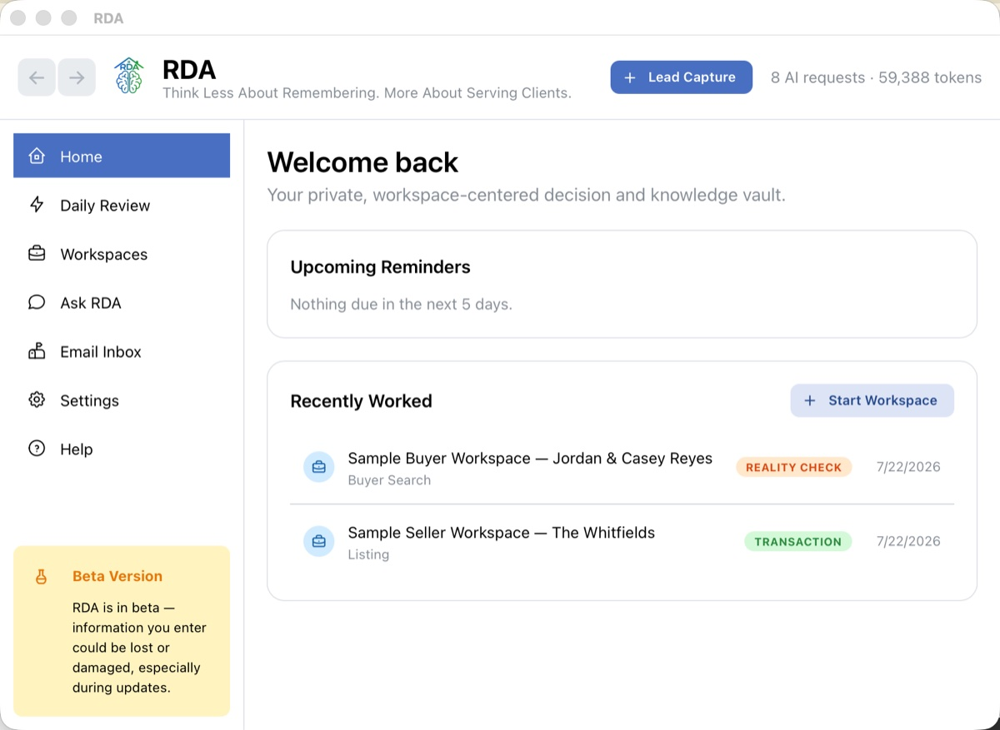
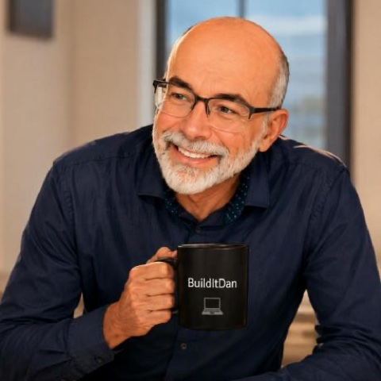
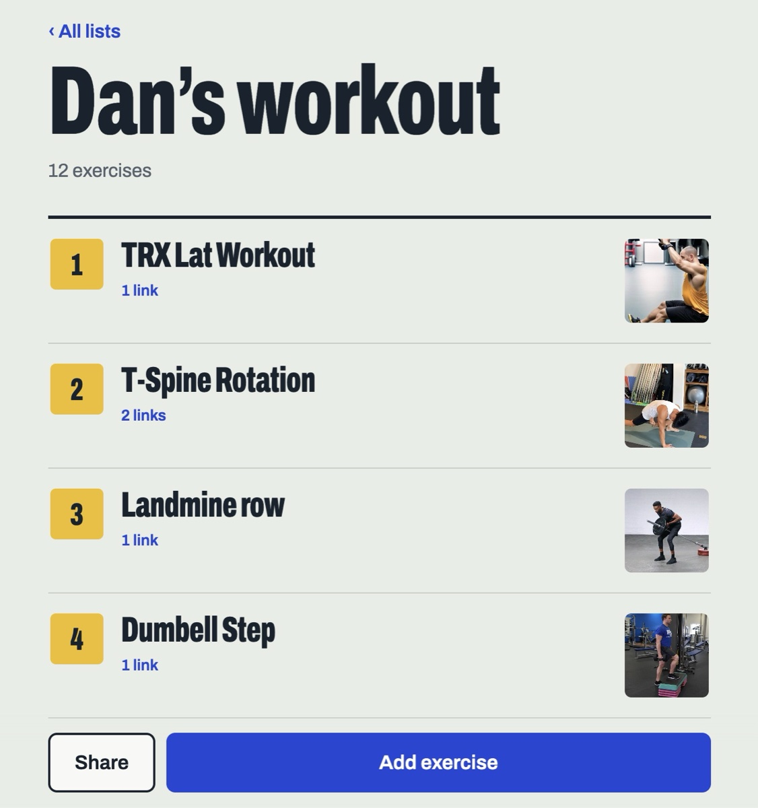
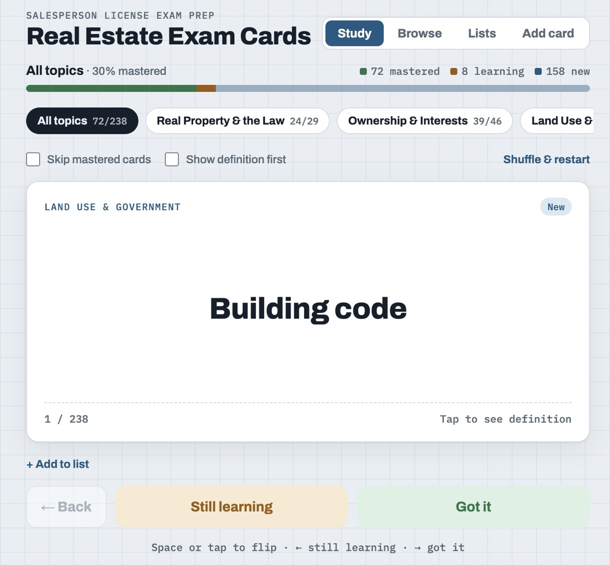

Realtor Decision Assistant (RDA)
A local-first desktop app for Mac and Windows that brings a realtor's conversations, documents, tasks, and reminders together, with AI helping surface what needs attention.

BuildItDan
Software engineer focused on performance, reliability, and automation, now applying AI to real-world workflows.
I'm a software engineer and certified PMP with 20+ years in healthcare IT, data migration, and high-volume image processing. At InfoWerks, I design and optimize multi-threaded C# pipelines that convert pharmacy and EHR images and their metadata during large-scale platform migrations, processing workloads of over 3 million images.
The work centers on throughput, reliability, and automation, with HIPAA-compliant handling of patient and pharmacy data at every step.
Earlier in my career, I spent 15 years as IT Director at Catalina Marketing, leading a 30+ person team that supported a retail advertising network across 17,000+ sites, including direct-to-patient education delivered through the pharmacy.
Multi-threaded conversion pipelines in C#, built to move large image sets quickly and safely.
Automated migration workflows in C#, PowerShell, BASH, and batch that move customer records and imaging data to new vendor platforms.
Pharmacy and EHR environments, with HIPAA-compliant handling of patient data throughout conversion and migration.
PMP-certified, with experience leading IT teams and smart grid rollouts. I can design the system and also run the project.
Throughout my career, I've focused on designing and building systems that capture, transform, and deliver critical information at the moment it creates the most value.
Whether working in healthcare technology, systems integration, or AI-driven applications, my goal has remained consistent: helping people make better decisions, simplifying complex workflows, and using technology to solve meaningful business problems.
I'm growing my AI skills the way I've always learned: by building real things and sharing what I learn as I go. Real estate is where I'm putting it to work. It's a field full of information, commitments, and follow-ups, and that's where AI can help most.
Writing Markdown skill files that tell AI how to approach real estate scenarios, including when to ask before it answers. An early version is free on GitHub.
Turning everyday problems into working apps with plain-language requests, like a flashcard app for real estate terms.
Developing RDA with Claude Code: a local-first desktop app that helps realtors keep track of clients, conversations, and follow-ups.
Right now I'm studying for my Georgia real estate license, learning from working realtors, and writing up each experiment on Agent Ahead.

A local-first desktop app for Mac and Windows that brings a realtor's conversations, documents, tasks, and reminders together, with AI helping surface what needs attention.

My trainer's routines in one place: 12 exercises, each with a link to a video showing how to do it correctly. Shareable, so a trainer can build lists for clients.

238 exam terms across topics like real property law and land use, with progress tracking, for my Georgia real estate license studies.
Agent Ahead
I write about what I'm learning building with AI, with experiments, lessons, and a few surprises along the way.